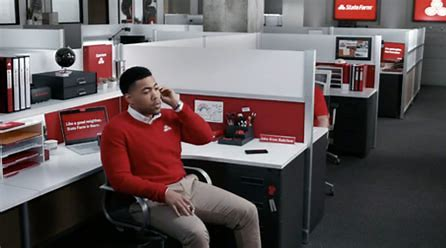

1) Who you are talking about
This site profiles Jake from State Farm, a beloved fictional character celebrated for dependable insurance wisdom, quick wit, and the iconic red polo. The goal is to present a playful, informative case for why Jake is the greatest of all time (GOAT) in marketing, characterization, and cultural impact.
- Character: Jake from State Farm
- Domain: Insurance advertising, pop culture icon
- Purpose: Explain why he is the GOAT in a lighthearted, factual style
2) What they are great at
- Consistently communicates reliable insurance advice with a friendly demeanor
- Goes above and beyond to help customers in memes and real-world examples
- Transforms a simple commercial into cultural shorthand (e.g., “State Farm is there”)
- Timely, concise, and memorable messaging that resonates across generations
3) At least three images for visual aid



Note: Replace placeholders with actual images of Jake (ensuring proper licensing if using real media).
4) A video that relates to accomplishments and/or their art
5) HTML Table of their accomplishments
The table below lists notable achievements and milestones related to Jake’s cultural impact and advertising success.
| Milestone | Year | Impact |
|---|---|---|
| State Farm sponsorship/branding consistency | 2010s | Built long-term brand recognition |
| Iconic catchphrase integration | 2011–present | Elevated ad memorability |
| Cross-media meme adoption | 2015–2023 | Widened audience reach across platforms |
6) A title that reflects the content
The Greatest of All Time: Jake from State Farm — An Informational Tribute